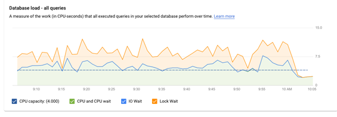
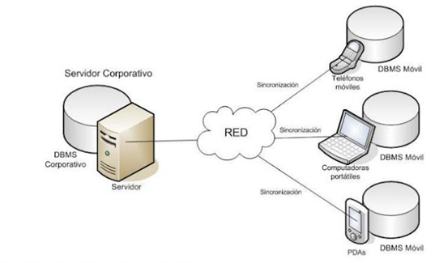
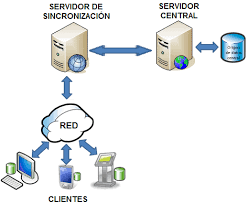
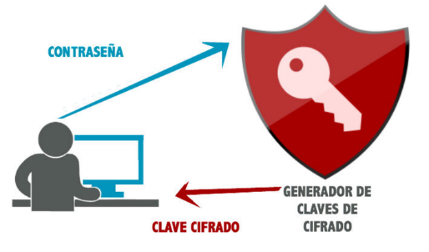
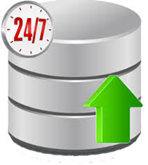

1.2 ELEMENTOS CLAVE PARA EL DISEÑO DE UNA BASE DE DATO MÓVIL
Hecho por: Luis Jazmany Morales Sánchez
1.2 ELEMENTOS CLAVE PARA EL DISEÑO DE UNA BASE DE DATO MÓVIL
Elementos Claves para el Diseño de una Base de Datos Móvil:
Sensibilidad
Las aplicaciones de los dispositivos móviles deben poder ofrecer la información de interés del usuario en cualquier lugar y hora del día.
La BD del dispositivo móvil solo hará uso de las tablas de la base de datos central que le sean útiles al usuario, debido a los recursos físicos que limitan al dispositivo como tal. Inclusive, en ocasiones de algunas tablas solo toma las columnas y/o filas que le son de interés, por lo que se deben crear nuevos esquemas de la base de datos central para llevar a cabo esto.
Factores:
Tiempo que se demora en realizar una consulta: Técnicas/Métodos para conseguirlo:
• Reunir todos los datos de interés en un solo sitio y agruparlos en un modelo transaccional de clúster. El segundo método consiste en almacenar en la memoria cache del dispositivo los datos que son consultados con más frecuencia).
Tipo de datos que se quieren manejar y la cantidad de información que se va guardar para tener en cuenta que no entre en conflicto con la memoria que posee el dispositivo móvil. Se recomienda:
• Realizar una rápida normalización para evitar usar consultas en las cuales se deban hacer Join sobre las tablas existentes. Si el número de usuarios que realicen las consultas sobre la BD es grande, el desempeño del sistema no se debe afectar.

Consistencia de Datos y Concurrencia:
Debido a la alta concurrencia de los datos por parte de muchos usuarios y a las actualizaciones que la BD móvil realiza, en ocasiones se presentan
inconsistencias en los datos. Por tal razón, la BD debe ser capaz de trabajar tanto en forma online como offline, y debe estar bien sincronizada con los servidores de bases de datos centralizadas para que los datos que se obtengan en cualquier forma sean consistentes.

Sincronización y Resolución de Conflictos:
Se debe mantener la base de datos actualizada debido a los Insert y Delete que se realizan sobre la misma. El problema radica en que muchos acceden a la BD al mismo tiempo y la sincronización para cada usuario del sistema puede ser demasiado compleja. Solución:
• Uso de la fragmentación y replicación de la información, así cada usuario posee la información que necesita y es más fácil de actualizar.
• Sin embargo, si no se puede realizar fragmentación a la BD, se puede manejar es el uso de prioridades de acuerdo al rol del usuario que esté usando el sistema.

Seguridad:
Las BD que se manejan, deben estar protegidas de código malicioso e incluso que no puedan ser vistos por terceros. Esto para mantener confidencialidad de los usuarios, así como de los recursos que manejan. Solución:
• Uso de sistemas de encriptación y de autenticación de los usuarios.

Alta Disponibilidad:
la base de datos debe estar disponible a cualquier hora del día, para ello, se debe contar con un plan de manejo automático de back up, manejo de caídas o fallas del sistema e inclusive el uso de replicaciones de la base de datos.

Tamaño de los Datos:
A diferencia de los sistemas tradicionales de bases de datos, el tamaño de los datos en una base de datos móvil es importante ya que cuando se comunique con la base de datos central puede influir de manera muy severa y afecta también los tiempos de respuesta.
Tamaño de la Pantalla:
Debido a la dificultad que se tiene en los dispositivos móviles de mostrar toda la información, se recomienda mostrar la información de forma sencilla en tablas de 2 o 3 columnas con 4 o 5 filas a la vez.
Baja Velocidad de Transmisión:
Aun cuando redes como CDMA manejen velocidades de 144kbps o 112kbps en GSM/GPRS, las velocidades de transmisión son bajas, comunicaciones sobre redes UMTS con tecnologías HSDPA HSUPA permiten velocidades de 7 a 12 Mbps; sin embargo, estas velocidades varían de acuerdo a la ubicación, al tipo de servicio que se adquiera, y al tipo de antena cercana.
Baja Velocidad de Procesamiento:
La velocidad de los procesadores de los dispositivos móviles es alrededor de 200 a 1400 MHz en promedio, ya que se trata de dispositivos pequeños sin disipadores de calor, además hay que tener en cuenta que dicho performance es compartido para todas las aplicaciones del dispositivo.
Costo:
Con el consumo masivo de los últimos años de las redes inalámbricas, es posible que el uso de estos sistemas sea más factible.
Metodología de Diseño de una BD Móvil
1. Recolección de Requerimientos de Negocio.
2. Análisis de Requerimientos de Negocio.
3. Diseño de la Base de Datos.
4. Construcción y Prueba de un Prototipo.
5. Construcción de la Base de Datos y Prueba.
6. Producción y Mantenimiento.
Pasos para el Diseño de una BD Móvil
1. Selección de la Plataforma
2. Base de Datos Móvil
3. Base de Datos Central
4. Modelo de Transacciones
5. Técnicas de Optimización
6. Entidades de Bases de Datos
7. Atributos de las Entidades
8. Diagrama de Entidad-Relación
Bibliografia:
Ortiz, N., Duarte, D., Mora, M., & Caicedo, F. (13 de Febrero de 2013). ARQUITECTURA Y DISEÑO DE BASES DE DATOS MÓVILES. Recuperado el 05 de Septiembre de 2021, de revistas.udistrital.edu.co: https://revistas.udistrital.edu.co/index.php/tia/article/view/4296/6014